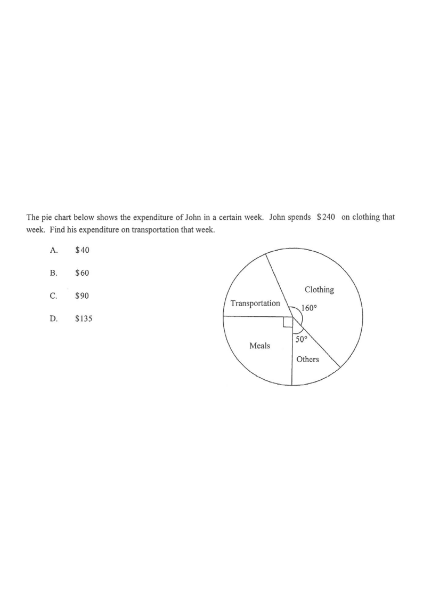

Topic 15 · Statistics · Pie Chart & Sector Angles
Step 1 — given data highlighted
The pie chart below shows the expenditure of John in a certain week. John spends \$240 on clothing that week. Find his expenditure on transportation that week.

From the pie chart:
Clothing sector angle $=160^\circ$ · Meal sector angle $=90^\circ$ (right angle at centre) \\ Others sector angle $=50^\circ$
Given: expenditure on clothing $=\$240$.
Angles at a point sum to $360^\circ$:
$360^\circ - 160^\circ - 50^\circ - 90^\circ = 60^\circ$
So the transportation sector subtends $60^\circ$ at the centre.
Expenditure is proportional to the sector angle:
$\dfrac{\text{Expenditure on transportation}}{\text{Expenditure on clothing}} = \dfrac{60^\circ}{160^\circ} = \dfrac{3}{8}$
Since clothing cost \$240:
$\text{Transportation} = 240 \times \dfrac{3}{8} = \$90$